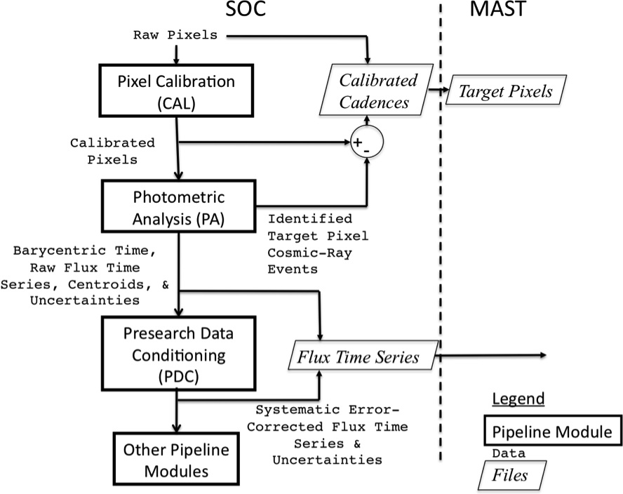
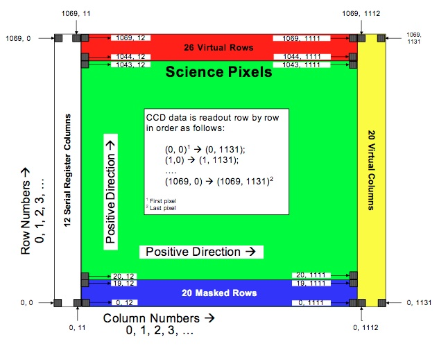
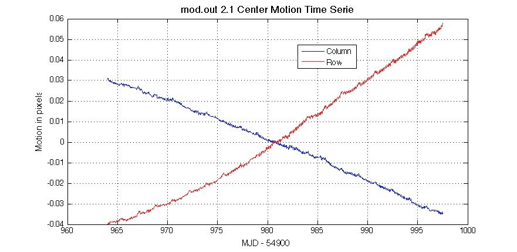
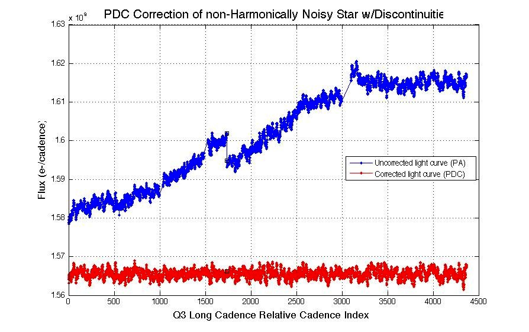
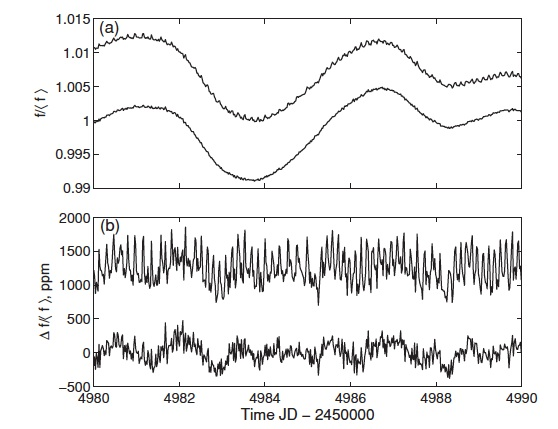

Users are encouraged to review the following papers prior to working with Kepler or K2 data. These papers describe the science operations, processing and characteristics of the light curves. In addition to these papers, the user is also directed to the Kepler Instrument Handbook, the Data Release Notes, the Data Charactistics Handbook, links to which can all be found on the data releases page. While operations for K2 are slightly different, these papers still provide a useful overview that is largely relevant for the K2 pipeline. We note that the latest information specific to the K2 pipeline can be found in the pipeline release notes. Users of K2 data are strongly encouraged to read both the pipeline and data release notes for K2.
- Kepler Mission Design, Realized Photometric Performance, and Early Science (Koch, D. G., et al., 2010 ApJ, 713, L79)
- Kepler Science Operations (Haas, M. R., et al., 2010 ApJ, 713, L115)
- Instrument Performance in Kepler's First Months (Caldwell, D. A., et al., 2010 ApJ, 713, L92)
- Overview of the Kepler Science Processing Pipeline (Jenkins, J. M., et al., 2010 ApJ, 713, L87)
- The Kepler Pixel Response Function (Bryson, S. T., et al., 2010 ApJ, 713, L97)
- Pixel-Level Calibration in the Kepler Science Operations Center Pipeline (Quintana, E. V., et al., 2010 Proc. SPIE, 7740, 77401X)
- Presearch Data Conditioning in the Kepler Science Operations Center Pipeline (Twicken, J. D., et al., 2010 Proc. SPIE, 7740, 77401U)
- Initial Characteristics of Kepler Short Cadence Data (Gilliland, R. L., et al., 2010 ApJ, 713, 160)
- Initial Characteristics of Kepler Long Cadence Data for Detecting Planet Transits (Jenkins, J. M., et al., 2010 ApJ, 713, 120)
- Preliminary Astrometric Results from Kepler (Monet, D. G., et al., 2010 ApJL, submitted)
- The K2 Mission: Characterization and Early Results (Howell, S. B., et al., 2014 PASP, 126, 398)
Pipeline overview
Data collected by the Kepler photometer are recorded on orbit, downlinked, archived, and end up at the Space Science Division of NASA's Ames Research Center. All science data is processed and calibrated through the Kepler Science Pipeline. The pipeline converts raw data numbers, pixel locations, and ancillary engineering data into calibrated counts and astrometric coordinates. After summing the counts within defined apertures, estimating and subtracting background light, and adjusting for cosmic rays, calibrated light curves are created for each selected source. Further processing corrects these light curves for a variety of instrumental artifacts and conditions the data for the next step (a numerical search for candidate planetary transit events in the case of Kepler data). Kepler candidate transits are then validated in the final processing stage.
Processed data is written to FITS-formatted files and exported to the MAST archive at the Space Telescope Science Institute. The archived data includes the raw and calibrated pixel values for all sources, background pixels, calibrated and corrected light curves, and related ancillary engineering data. The specific data products and content archived at MAST are detailed here.
Pipeline components
Each processing step is executed via a software module, developed and implemented by the Science Operations Center (the "SOC") at NASA Ames. Each module is composed of a number of procedures coded in Matlab. A global schematic of the pipeline flow is presented below. The principal elements of the pipeline are entitled (followed by their common use abbreviations):
- Calibration (CAL)
- Photometric Analysis (PA)
- Pre-search Data Conditioning (PDC)
For Kepler data only, the pipeline also included the following elements:
- Transiting Planet Search (TPS)
- Data Validation (DV)
A schematic of the Kepler Processing Pipeline is shown below. The primary software modules are indicated on the left.

Calibration (CAL)
The initial step in the Kepler science data pipeline is performed by the software module termed CAL. CAL converts raw data numbers into calibrated pixels, which are then passed to the Photometric Analysis (PA) module for compilation into a light curve. The Science Operations Center at Ames receives pixel data from the Data Management Center at STScI. Data from each Kepler CCD is formatted as FITS files, including collateral pixel data, collected for calibration. CAL operates on both the 30 min (long cadence) and 1 min (short cadence) observations, as well as on the full frame images. Users of CCD data will be familiar with most functions of the calibration module, however we note a few aspects peculiar to the operational modes of Kepler. In general, most users of Kepler or K2 data will not work directly with raw counts, so the information provided here is to inform users on the the process by which calibrated pixels are generated.
CAL functions
CAL performs a number of functions familiar to CCD photometrists to transform raw data counts into calibrated pixels, operating on a single CCD channel at a time. Detailed models of each CCD were developed during pre-flight testing, and are combined with full-frame images obtained during the commissioning period both before and after ejection of the aperture cover. Each CCD channel consists of 1070 rows by 1132 columns, of which only a subset (1024 x 1100) is used for photometry.
Below is a block diagram of a Kepler CCD, showing the science and collateral pixel locations.

The focal plane CCD models are applied within CAL to execute the following tasks:
-
Bias level
The CCD bias level is determined using collateral pixels obained with each CCD read. Users should note that the term "black level" is used in much of the Kepler documentation, as a synonym for the more commonly used "bias level". The bias level contains both a 2D map, and an additional 1D "dynamic" bias correction. Once the 2D black level is removed, a fit to the residual bias is used to estimate a 1D black correction. Note the difference between Kepler's bias subtraction method, and the approach commonly used for shuttered, non-continuous CCD operation, in which the user takes separate bias frames, before, during and after data collection. -
Dark current
Dark current is estimated from the masked and virual smear pixels. Since the focal plane is maintained at −85 C, the effective dark current is essentially zero (Caldwell et al. 2010). -
Smear
Kepler observes continuously, with no shutter; therefore stars illuminate the CCDs during readout. This "staring" mode produces trails along columns that contain stars, as charge is smeared out during the read. Each pixel in a given column of the image receives the same smear signal. These values are typically small, since each pixel only “sees” a star for the readout time, 520 milli-seconds, divided by the number of rows 1070. The smear level correction in each image is determined using the masked and virtual smear pixels set aside for this purpose, as seen in the figure above. -
Gain
The gain function associates observed photoelectrons (e-) to the analog/digital units generated by the A/D converter. Gain is the average slope of the transfer function, and has a median value of 112 e-/ADU across the focal plane (Caldwell et al. 2010). A measure of the deviation from the linear transfer function is estimated at each ADU signal level; this nonlinearity model provides appropriate corrections. -
Undershoot
An issue noted during pre-flight testing can be described as a large, signal-dependent trailing undershoot in the image, traced to an amplifier in the local detector electronics. An undershoot model is applied to correct affected pixels. -
Flat field
A flat field correction is the last step in CAL, applied to photometric pixels to correct for spatial variations in pixel sensitivity to a uniform light source. CAL uses a local flat field, also termed the pixel response non-uniformity (PRNU) map. The PRNU image maps each pixel’s relative brightness variation from the local mean, expressed in percent. The median standard deviation of the pixel values in the PRNU image across the focal plane is 0.96%. The flat field was developed during ground testing prior to launch; there are no separate flat field exposures obtained on orbit.
CAL produces the basic photometric product of Kepler: a series of calibrated target pixel images within a pre-set aperture. The photometric time series is constructed from these images in the next step, Photometric Analysis (PA).
Photometric Analysis (PA)
The PA module constructs a photometric time series, i.e. a light curve, from the pixels defined to contain the optimal aperture and associated background pixels. The data are in the form of integrated (total) photoelectrons collected during either a 1-minute or 30-minute observation. For each observation, a timestamp is associated, defined as the modified Julian date at the midpoint of the observation. Each data point in the time series is the direct sum of the photoelectron counts within a pre-defined target aperture. Source apertures are constructed to maximize the signal-to-noise ratio of the light curves and take into account the varying pixel response function across the focal plane. Details about the source apertures are provided here and in Bryson et al. 2010.
PA functions
The tasks performed by PA are:
-
Barycentric time correction
Timestamps are computed using the onboard clock and a detailed ephemeris of the spacecraft trajectory. A further correction is applied such that the mid-cadence timestamp references the time of signal capture at the solar system barycenter. The barycentric corrections produced in PA also compensates for the small timing offsets produced by readout of the array. -
"Argabrightening" event detection
An occasional diffuse illumination of portions of the focal plane lasting a few minutes was detected. The origin of these brightenings is not currently known. The software searches for these events, and flags the affected pixels. Event detection occurs first in the PA module flow, to ensure that this brightening is not confused with much more localized excess photoelectrons produced by cosmic rays. Pixels affected by Argabrightening are "gapped" in the light curve, i.e., set to -Inf. Listings of the specific affected cadences are presented in the relevant data release notes for Kepler and K2. -
Cosmic ray cleaning
Kepler is affected by the solar and Galactic high energy particle flux, with an expected rate of ~3 per day per pixel (Jenkins et al. 2010). Cosmic rays (CRs) impact at all angles of incidence; each event contributes charge to ~4 adjacent pixels. In PA, CRs are identified and subtracted in both background and source pixels, using a robust outlier identification algorithm. Since CRs are more easily detected in photometrically quiet sources, mitigation is more effective for those sources. The user is cautioned that CRs may not be adequately removed from bright pixels, but the overall effect on light curve precision will be minimal. The same method and parameters are used for both long and short cadence observations. PA also logs detected CRs and derived CR metrics for impact rate and mean deposited energy. -
Background removal
A background signal is subtracted from each pixel (before summing) in the optimal aperture. Since each source aperture does not include extra pixels to evaluate the local background, Kepler collects a distinct set of background pixels on each channel for this purpose. A grid of background apertures are defined on each channel, roughly symmetric across the focal plane. Each aperture generally contains four pixels, an 8x8 arcsec square, which are selected to avoid nearby stars and potentially saturated columns. The integrated diffuse background at each target pixel location is derived by fitting a 2-D polynomial to the calibrated background pixels for each cadence, then interpolating the fit for the specific pixels in the target aperture. No background pixels are collected at 1-minute intervals. For this data, the long cadence background polynomials are temporally interpolated to the midpoints of the short cadence intervals. Short cadence data users should be aware that changes in the background which occur on timescales less than 30 minutes are not captured by the current operations mode. Additional information about backgrounds can be found here. -
Aperture photometry
Each source is defined by a target aperture mask and the optimal photometric aperture. The optimal aperture contains a subset of the total pixels in the mask. The flux is the unweighted sum of pixels in the optimal aperture after background removal, termed Simple Aperture Photometry (SAP). This aperture is defined as the pixel set with the largest derived signal-to-noise ratio, taking into account the Poisson noise for the source and background, read noise, and quantization noise. Note that the optimal aperture does not necessarily capture the total flux from a source, but for Kepler was specifically designed to minimize noise for maximum transit detection sensitivity. Also, the PSF wings from surrounding sources will affect photometry in the optimal aperture. The crowding metric is defined as the fraction of flux in the optimal aperture produced by the target. This metric was computed for each target list each quarter for Kepler. The excess flux due to crowding within the optimal aperture is removed when the light curves are corrected in the next processing step (PDC). Furthermore, since the spacecraft rolled 90 degrees each quarter during the Kepler mission, any given Kepler target will lie on a different CCD after each roll. Apertures were re-defined for each quarter, to account for the different pixel response functions of the CCDs on which the source may fall.
In the currently exported FITS light curve files, the output of PA is labeled "raw" flux to distinguish it from light curves which have been corrected for systematic effects in the subsequent PDC software module. At present, there is no flagging of individual bad pixels in the aperture photometry, nor does PA exclude known bad pixels by "gapping" observations. Compromised data is marked on a per channel and cadence basis, e.g., the Argabrightening events described above. Individual bad pixels will affect one or more cadence observations of individual targets; users are cautioned to inspect the target pixels if they suspect corrupted data is producing an odd light curve. In general, users may wish to perform custom photometry by altering the mix of included pixels. -
Source centroids
The photocenter of each source is referred to as the source centroid. Flux-weighted centroids are calculated for all defined sources for each cadence. The derived centroids are tabulated in the light curve file exported to MAST and provide a centroid motion time series for each source.
The dominant source of long-term source motion for Kepler targets, differential velocity abberation (DVA), is produced by the spacecraft motion during each quarter. Each source traces a small elliptical arc across the detectors over the period of Kepler's orbit. Source motions also may occur due to random pointing jitter, pointing drift, and focus changes induced by thermal transients. For K2, low-frequency motion due to solar pressure and subsequent thruster firings causes targets to drift across detector pixels.
An example of a motion centroid time series for Kepler is shown below. Motion of the nominal "center" of channel 1 (mod.out 2.1) is displayed for Q0. The large systematic drift is due to differential velocity abberation. Since this channel is located at the edge of the FOV, it also exhibits greater sensitivity to focus jitter and drift. The total amplitude of the centroid motion is on order 0.1 pixels, equivalent to 0.4 arcseconds.

-
Astrometric solution
PA performs a standard function of astronomical data pipelines: assignment of celestial coordinates to detector pixels. On order 200 optimal sources are selected on each channel: bright, unsaturated, minimally-crowded, main sequence stars. A 2-D polynomial fit is constructed from the source row and column centroids for each channel and cadence. Right ascension and declination for each pixel are interpolated by mapping the polynomial fit to detector locations for a given output channel. The astrometric solution is derived for each cadence independently. -
Computation of metrics
The PA module computes a variety of measures describing photometer performance, both as a health assessment and to support systematic error mitigation in following processing steps.
The output of this module is a photometric time series. These light curves are then passed to the Pre-Search Data Conditioning (PDC) for correction of systematic errors.
Pre-search Data Conditioning (PDC)
The PDC software module examines the calibrated light curves produced by PA and applies a series of corrections, based on known instrumental and spacecraft anomalies as well as unanticipated artifacts found in the data. "Pre-search" refers to data conditioning prior to executing a transit search, which was undertaken by the next module in the pipeline (TPS) for the Kepler mission only.
For a large range of variable sources, the output of PDC appears well aligned with the output of PA, the quality of the light curves are improved after correction for systematic errors, and the instrinsic variabilty preserved. Users should exercise caution if their phenomena of interest are much shorter (<1 h) or much longer (>5 d) than transit timescales, or display complex light curves with timescales similar to those expected for Earth-like transits (1-10 hrs), e.g., eclipsing binaries.
PDC functions
PDC is executed in single channel "chunks", in which all sources located on a single channel ("mod.out") are processed through the software. PDC executes the following tasks in the order listed:
-
Data anomaly flagging
Observations affected by known anomalies are flagged to exclude their use in systematic error corrections. Discrete discontinuities are introduced into the light curves by known spacecraft activities such as the monthly Earth point downlinks for Kepler, and commanded attitude adjustments, and by unanticipated events, e.g., the occasional safe mode. In addition to missing data, photometry may be present for some cadences but in a degraded form due to planned activities such as the reaction wheel desaturations (affects 1 cadence every 3 days for Kepler), and unanticipated events, e.g., Argabrightenings identified by PA, and loss of fine point. -
Resample ancillary spacecraft data
Engineering data is obtained on a variety of timescales. Before correlating these data to the photometry, the ancillary data is rebinned to match the sampling rate of the long and short cadence data. -
Identification and correction of discontinuities
In addition to known data gaps described above, source-specific flux discontinuities have been observed. Many, but not all, random flux discontinuities are likely caused by impacts of solar and galactic cosmic rays on the CCDs. Impulsive energy deposition from cosmic rays alters the photo-sensitivity of individual pixels, which may recover on a variety of timescales. In this step, PDC identifies discontinuities in the light curves, and estimates the flux offset. Discontinuities are corrected on a single or multiple cadence basis, using the estimated offsets. -
Identify variable stars
PDC attempts to separate "quiet" stars from variable sources, using a tunable variability filter. Values of 0.5% and 0.25% center-to-peak variation has been used in different data releases. This switch determines the detrending options; variable stars are treated differently than quiescent stars. -
Identify astrophysical events
Astrophysical events must be identifed, as best as possible, to prevent those events from affecting the correlation of the synchronized engineering data to the light curves. These signatures, e.g., giant planet transits, stellar eclipses, flares and microlensing events, are located in the calibrated light curves, and replaced temporarily with values interpolated across relevant cadences. -
Systematic error correction for quiet stars
For sources below the variability threshold, the light curve is compared to the resampled ancillary engineering data and centroid motion time series to identify and remove correlated trends. This process is termed cotrending in the Kepler documentation. A singular value decomposition approach is utilized, to identify systematic trends at many frequencies in the data which appear to be induced by some spacecraft or detector process. An example would be an observed flux variation correlated with periodic focus changes induced by flexure in the optics. The goal of cotrending is to remove flux signatures that are correlated with the ancillary data on the specified time scales. During the first year of operation of the Kepler mission, the project found that the systematic errors are caused primarily by target motion at the pixel or sub-pixel level, which modifies the collected signal. Cotrending against the centroid motion time series improves the quality and noise content of the data. Another noise source is thermal transients observed following safe modes and the monthly downlinks. The changing thermal environment of the spacecraft following these events induces focus changes, which alters the source PSFs. These transients last a few days (1 day = 48 30-min observations), affecting a few hundred long cadence datapoints. Users should note that low amplitude periodic astrophysical signals which are correlated with the ancillary data will likely be compromised in the Kepler data. -
Systematic error correction for variable stars
For sources exceeding the variability threshold, PDC attempts to model periodic behavior, in order to fit and remove this component and correlate against the underlying light curve. Smoothly varying stars are generally well-fit by PDC, preserving the astrophysical signal, and reducing the noise level. For stars tagged as variable, the following steps are taken:
(a) Correct for thermal transients and differential velocity aberration.
(b) Fit the periodic content. If successful, remove the fitted harmonic content from the light curves.
(c) Apply the cotrending procedure to the residual light curve.
(d) Apply metrics to assess the results.
(e) Choose the non-variable or variable cotrending result for each target initially identified as variable.
For some sources, the cotrending has been found to produce unacceptable results. In these situations, the calibrated light curve (PA output) is substituted for the cotrended light curve (PDC output). For these targets, systematic effects which are a component of the cotrending algorithm are not addressed in PDC.
An example of PDC systematic error correction for a variable star observed by Kepler without a strong periodic component is shown below. The star is variable on short time scales; over Q3 two discontinuities are observed, along with a linear term produced by differential velocity aberration. (Adapted from DRN5.)

-
Correct excess flux
Some of the signal within the optimal aperture arises from the PSF wings of nearby sources, contaminating the signal from the target. PDC subtracts an estimate of this excess flux, based on a source-specific crowding metric, defined as the fraction of starlight arising from the target star. This metric has a range of [0-1], where 1 implies all light comes from the target, and 0 = all background. Simple aperture photometry produced by PA is not corrected for source crowding. The crowding metric is derived for Kepler targets from the distribution of surrounding stars as tabulated in the KIC, and the measured structure of the pixel-response functions of the source and nearby stars. Since each source is observed on a different location of the focal plane each quarter due to the quarterly roll, the PRFs, optimal apertures, and crowding metric are defined for each quarter. Users will see an offset in flux level when plotting PA output versus PDC output. The offset is a measure of the source contamination correction. -
Identification of outlying data points
PDC searches for data points lying outside (+/-) an adjustable range. A median filter is applied after masking of potential astrophysical events, such as giant planet transits, stellar flares, and microlensing. After removing the median, the residual light curve is examined for points lying further than a pre-set value. In the subsequent transit search phase for Kepler, flagged points are filled ("gapped") via interpolation. However, light curves available in the archive at MAST do not have outliers removed; the data is unaltered for user interpretation.
Performance and cautions
The Kepler data pipeline was originally optimized for transit searches. We note here some precautions for working with the conditioned data (PDC).
Kepler is more sensitive then any previous photometer producing near-continuous time series. The mission is also exploring a variability domain not previously accessible. Therefore, we are encountering subtleties in the data and the data processing not seen before.
Users are reminded to compare the calibrated light curve (PA) to the corrected light curves (PDC), to ascertain the reliability of any astrophysical signature in your data. Following are examples of specific situations found in PDC output of which the user should be aware:
(a) Fails to identify and correct a source-specific discontinuity.
(b) Poor detrending may introduce noise into complex lightcurves.
(c) May identify a stellar eclipse as a flux discontinuity.
(d) Fail to accurately track slowly rising or declining flux levels over a quarter. If this linear term is correlated with centroid motion times series, the linear term may be removed from the data.
(e) Positive outliers which are not flagged as real events. PDC may tag these events as discontinuities, and attempt to correct.

Output of PA (top curve) and PDC (bottom curve) for a variable star observed during Q1. This source displays periodic behavior with ~1% peak-to-peak amplitude on a timescale of ~5 days. The figures show that the overall source variability is preserved by PDC. Systematic noise introduced by an onboard heater can be seen as the short period wiggles in the upper light curves. This noise is removed by PDC as the noise signal is correlated with ancillary engineering data.
Kepler is sensitive to an enormous volume of variability phase space. Overall, the corrected light curves are excellent probes of the underlying variations on a wide range of sources. In broad terms, users should be cognizant of three types of phenomena for which the validity of the corrected light curves warrant caution:
(1) Low amplitude (10s-100s PPM) variability with periods > 10 days.
(2) Strongly episodic variable stars, such as cataclysmic binaries. PDC may flag eruptive phenomena as discontinuities, or attempt a fit which may unintentionally modify the data.
(3) Complex light curves, exhibiting multiple varying components, for
example and eclipsing binary with one or both components also
variable.